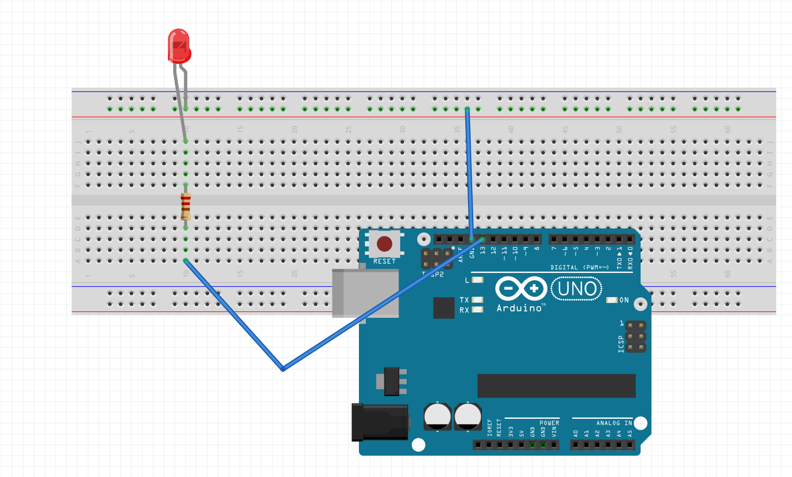
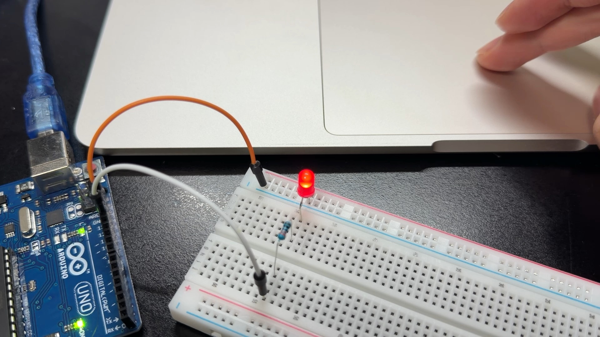
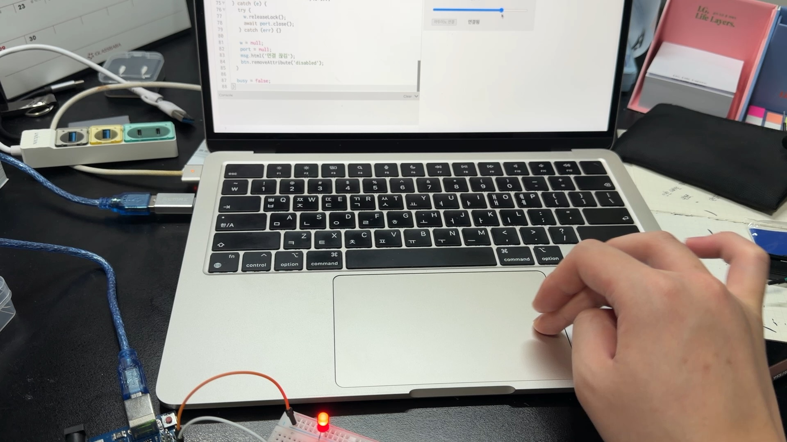

슬라이더 하나로
LED 밝기 조절하기
p5.js 슬라이더로 0~255 값을 보내고, Arduino Uno의 D13에 연결한 LED 밝기를 조절하는 프로젝트다.
고동현 · 창의설계입문 · 2026.11.01
시연 영상 보기전체 코드GitHub 저장소 ↗01. 준비물과 연결도
Arduino Uno, LED, 전류 제한 저항(220~330Ω), 브레드보드, 점퍼선, USB 케이블을 사용한다.

| 연결 위치 | 연결 대상 |
|---|---|
| Uno D13 | 저항 → LED 긴 다리(+) |
| LED 짧은 다리(−) | GND 레일 → Uno GND |
| Uno USB | 컴퓨터 USB 포트 |
D13은 LED 출력 핀 번호다. 브라우저에서 고르는 USB 시리얼 포트와는 다르다. 5V에 LED를 직접 연결하면 슬라이더로 제어할 수 없다.
02. 시연 영상과 사진
제공된 IMG_7768.mov를 웹 재생용 MP4로 변환했다. 아래 사진은 같은 영상에서 추출한 장면이다.


03. 동작 원리
- p5.js의
createSlider(0, 255, 0, 1)로 밝기 값을 정한다. - Web Serial로 50ms마다 밝기 값을 1바이트로 전송한다. 통신 속도는 115200 baud다.
- 아두이노는
Serial.read()로 값을 읽고 D13의 켜짐 시간을 바꾼다. - 약 2040μs 주기로 소프트웨어 PWM을 만든다. 0은 꺼짐, 255는 계속 켜짐이다.
- 수신이 2초 이상 끊기면 LED를 끈다.
Uno의 D13은 하드웨어 PWM 핀이 아니므로 analogWrite(13, v) 대신 micros()와 digitalWrite()를 사용했다. 소프트웨어 방식이므로 코드 실행 시간에 따라 파형에 작은 흔들림이 생길 수 있다.
p5 화면의 원은 선택한 밝기를 미리 보여준다. 실제 LED 밝기를 측정하는 센서는 아니다.
04. 전체 코드
변수명은 짧게 두고 주석 없이 정리했다. 아래 두 코드는 서로 다른 곳에 넣는다.
아두이노 IDE · LedSlider.ino
추가 라이브러리 없이 Uno에 업로드한다.
INO 다운로드아두이노 코드 보기
const byte led = 13;
byte v = 0;
unsigned long t = 0;
unsigned long rx = 0;
void setup() {
pinMode(led, OUTPUT);
Serial.begin(115200);
}
void loop() {
if (Serial.available()) {
v = Serial.read();
rx = millis();
Serial.write(v);
}
if (millis() - rx > 2000) v = 0;
unsigned long el = micros() - t;
if (el >= 2040) {
t += (el / 2040) * 2040;
el %= 2040;
}
digitalWrite(led, v == 255 || el < v * 8UL);
}
p5.js 웹 에디터 · sketch.js
웹 에디터의 sketch.js 내용을 아래 코드로 교체한다. 별도 HTML 요소를 만들 필요는 없다.
p5.js 코드 보기
let s, btn, msg;
let port, w;
let busy = false;
let t = 0;
function setup() {
createCanvas(400, 250);
s = createSlider(0, 255, 0, 1);
s.position(30, 170);
s.style('width', '340px');
btn = createButton('아두이노 연결');
btn.position(30, 210);
btn.mousePressed(con);
msg = createP('연결 전');
msg.position(160, 195);
}
function draw() {
background(240);
let v = s.value();
noStroke();
fill(60 + v * 0.76, 60 + v * 0.55, 40);
circle(200, 75, 90);
fill(30);
textAlign(CENTER);
textSize(20);
text('밝기: ' + v, 200, 145);
if (w && !busy && millis() - t >= 50) {
t = millis();
send(v);
}
}
async function con() {
if (!('serial' in navigator)) {
msg.html('Chrome 또는 Edge에서 실행하세요.');
return;
}
btn.attribute('disabled', '');
try {
port = await navigator.serial.requestPort();
await port.open({ baudRate: 115200 });
msg.html('보드 시작 중...');
await new Promise(r => setTimeout(r, 1600));
w = port.writable.getWriter();
msg.html('연결됨');
} catch (e) {
if (port) {
try {
await port.close();
} catch (err) {}
}
port = null;
msg.html('연결 실패. 포트와 시리얼 모니터를 확인하세요.');
btn.removeAttribute('disabled');
}
}
async function send(v) {
busy = true;
try {
await w.write(new Uint8Array([v]));
} catch (e) {
try {
w.releaseLock();
await port.close();
} catch (err) {}
w = null;
port = null;
msg.html('연결 끊김');
btn.removeAttribute('disabled');
}
busy = false;
}
05. 실행 순서와 확인 결과
- 배선도대로 LED와 저항을 연결한다.
- Arduino IDE에서 보드를 Uno로 선택하고 INO 코드를 업로드한다.
- IDE의 시리얼 모니터와 플로터를 닫는다.
- Chrome 또는 Edge에서 p5.js 웹 에디터를 열고 코드를 붙여 넣은 뒤 ▶를 누른다.
- ‘아두이노 연결’을 누르고 연결된 Uno의 USB 포트를 선택한다.
- 슬라이더를 움직여 LED를 확인한다. 다시 업로드할 때는 p5 실행을 먼저 정지한다.
Uno 기준 컴파일·업로드를 완료했다. 0, 64, 128, 192, 255, 0을 차례로 보내고 같은 값이 돌아오는 것을 확인했다. 이는 통신 검사 결과이며 실제 빛의 변화는 시연 영상으로 확인한다.
06. 고찰
처음에는 슬라이더가 움직여도 LED 밝기가 바뀌지 않았다. 화면에서 값이 바뀌는 것과 아두이노가 그 값을 받아서 출력하는 것은 별개이므로, USB 연결과 보드에 업로드한 코드를 함께 확인했다. D13은 하드웨어 PWM 핀이 아니어서 소프트웨어 PWM으로 구현했다. 이후 0, 64, 128, 192, 255 값을 보내고 같은 값이 돌아오는지 검사해 통신을 확인했다. 이번 실습을 통해 핀의 기능, 통신 속도, 전송 형식을 맞추는 것이 중요하다는 점을 확인했다. 더 일정한 PWM 파형이 필요하다면 하드웨어 PWM을 지원하는 핀을 사용하는 방법도 있다.